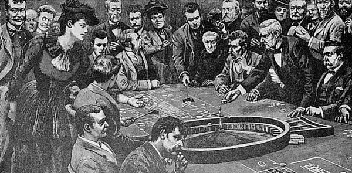
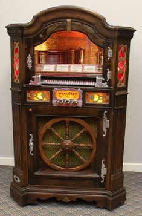
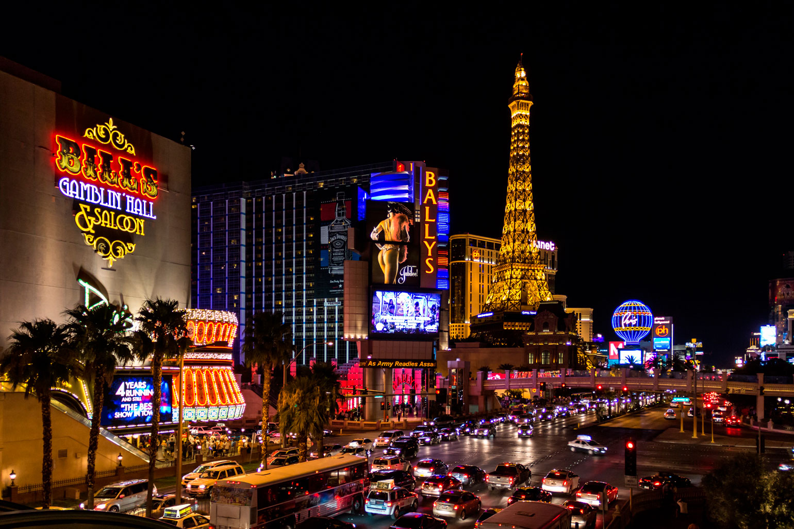

Evolución de los Casinos

Origen (siglo XVII)
El primer casino oficial, el Ridotto, abrió en Venecia en 1638. Juegos de azar controlados por el estado.
Era de las tragamonedas (1895)
Charles Fey inventa la "Liberty Bell", la primera máquina tragamonedas mecánica.


Las Vegas (1940 - actualidad)
La meca del juego mundial. Megacasinos, espectáculos y jackpots millonarios.